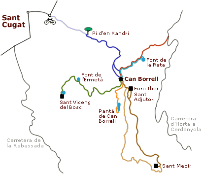

|
Suggeriments del xef...
propostes d'excursions a la carta
Els entorns propers al restaurant tenen una gran varietat de possibilitats per fer activitats en família, en parella, a peu, o en bicicleta.
Patrimoni, paisatge, natura, indrets i racons que us encisaran per la seva verdor. Visitar alguns d'aquests indrets i racons propers al restaurant, és una bona manera de passar una jornada completa en plena natura, al bell mig de paratges boscans, ombrívols i humits del Parc de Collserola. Segons el temps de què disposeu i les ganes de caminar, trieu la proposta que us sembli més interessant i feu-la abans o després de dinar al nostre restaurant.
Totes s'inicien a Can Borrell a excepció de la visita al Monestir de Sant Cugat, que us recomanem fer-la al matí i anar-hi directament quan arribeu a Sant Cugat, per després arribar al migdia al restaurant.

Recomanacions
A Can Borrell sempre hem donat molta importància al respecte per la natura i l'entorn que ens envolta. Conservar per poder-ne gaudir és un objectiu molt present. Us donem un seguit de consells per tal que feu aquest apropament amb harmonia i respecte per tot allò que teniu a l'abast. Penseu que sou al Parc Natural de Collserola, un espai natural protegit, del qual n'hem de gaudir molt anys.
- No passeu pels camps de conreu, tot i que pugui semblar que no hi ha res, poden estar sembrats.
- Eviteu de fer cridòria innecessària i respecteu la tranquil·litat que ofereix l'entorn natural.
- Si aneu en bicicleta cediu el pas als vianants, no passeu arran, manteniu una distància mínima d'un metre i alentiu la marxa. El Parc de Collserola té una normativa per anar en bicicleta pel Parc.
- Camineu pels camins senyalitzats sense endinsar-vos al bosc si no coneixeu la zona.
- No arrenqueu plantes ni flors, mantingueu l'entorn per tal que tothom en pugui gaudir.
Parc de Collserola: www.parccollserola.net
|
|